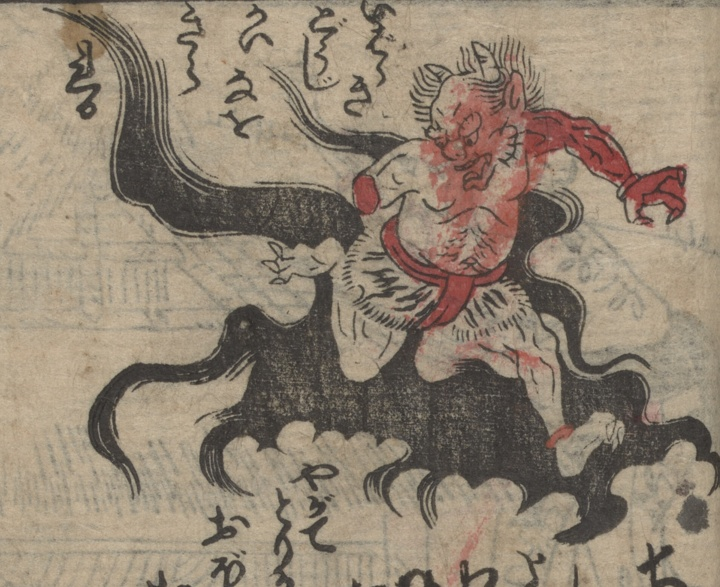

茨木童子；イバラキドウジ，鬼；オニ

渡辺綱に腕を切られた茨木童子。頭に2本の角が生え、上半身は裸で、毛皮の腰巻をつけて褌を締めている。黒雲に乗って飛び去ろうとしている。
著作者：不明／出典：親書誌：U426_nichibunken_0473：[絵本千丈嶽]；エホンセンジョウガタケ／日付：2025／資源識別子：U426_nichibunken_0473_0001_0000
Copyright (c)2010- International Research Center for Japanese Studies, Kyoto, Japan. All rights reserved.